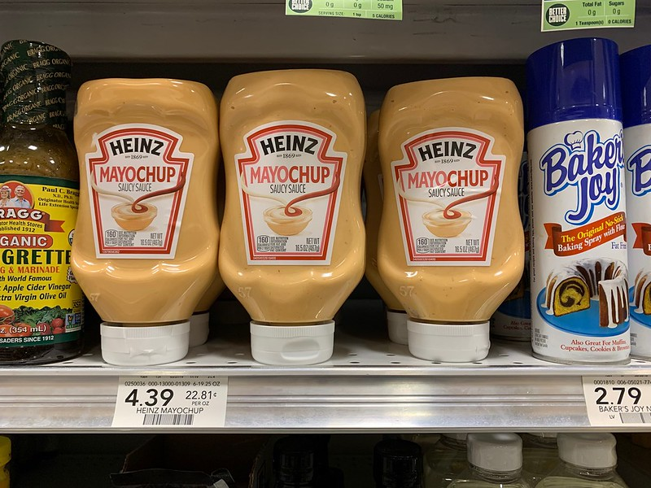
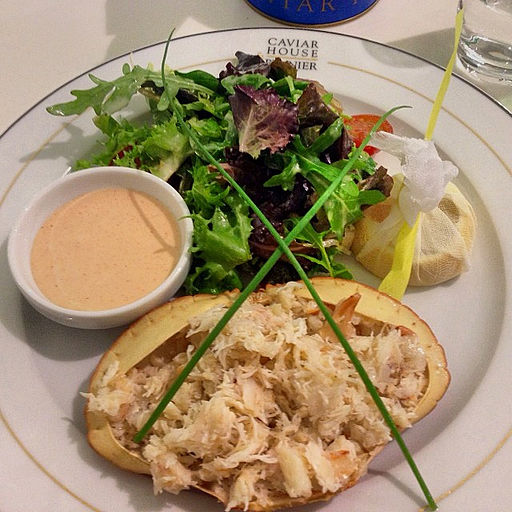

Salsa Golf
Salsa golf or Golf sauce is a popular sauce from Argentina. Like fry sauce it is mostly mayonnaise and ketchup, but often has spices mixed in to give it some extra flavor. It might be older than fry sauce as well, being invented sometime in the 1920s.
Mayochup
Mayochup is just a Heinz marketing name for what is just a basic fry sauce. There isn’t anything particularly unique about it. It was the first in a long, long line of other sauce combinations that all use a similar naming scheme.
Thousand Island
Thousand island is primarily used as a dressing. It contains a variety of ingredients such as spices, Worcestershire sauce, and finely chopped herbs and vegetables.
Marie Rose sauce
Marie Rose sauce is a British cocktail sauce made from mayonnaise, tomatoes or ketchup, and other ingredients.
